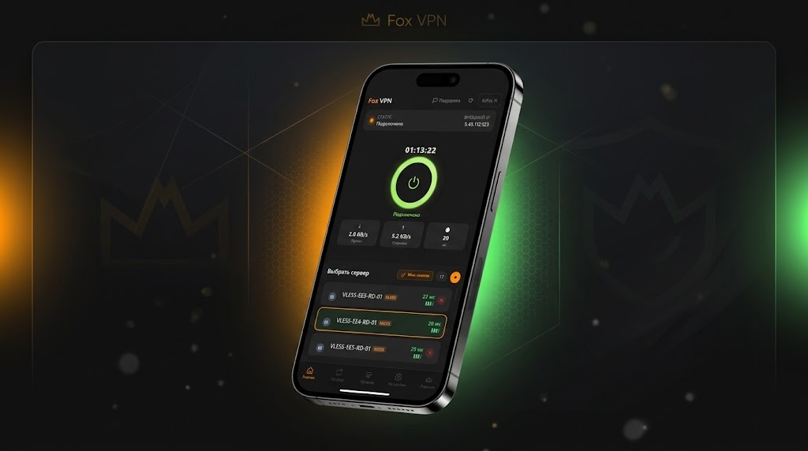

С Fox VPN безопаснее!
Скачайте VPN-клиент с обходом блокировок, мультипротоколом и защитой трафика
Бесплатно • Windows 10/11 • Android 7.0+
Готовы начать?
Скачайте Fox VPN и получите безопасный доступ прямо сейчас

Мультипротокол
Fox VPN поддерживает 4 протокола — VLESS, Hysteria2, SOCKS5 и кастомный Fox (FoxShake v2).
Ротатор автоматически выбирает лучший протокол для вашего провайдера. Если один блокируется — мгновенно переключается на другой.
18 методов обхода блокировок
Фрагментация TLS, HTTP-камуфляж, QUIC-обфускация, подмена SNI, DNS-over-HTTPS и другие техники.
FoxGuard — активная защита: детектирует зонды DPI в реальном времени и усиливает шифрование при обнаружении угроз.
9 серверов — Россия и Европа
3 сервера в России и 6 в Европе. Умная маршрутизация через FoxSwitch — горячая подмена транспорта без разрыва соединения.
ISP-тюнинг автоматически подстраивает MTU, фрагментацию и таймауты под вашего провайдера.
Windows и Android
Нативные клиенты для Windows 10/11 и Android 7.0+. Автообновление, kill-switch, диагностика.
Четыре протокола — один клик
Ротатор выбирает лучший автоматически
VLESS
TLS 1.3 + Reality
Hysteria2
QUIC
SOCKS5
Proxy
Fox
FoxShake v2